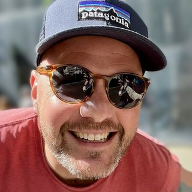

Paradiddle est un studio de création. Notre approche est stratégique, systémique et pragmatique. Nous fabriquons des choses utiles, qui tiennent.
Fondé à Lille par Benoît Schoeffel.
Un paradiddle, c'est le premier exercice qu'on apprend à la batterie : les deux mains alternent sur un même tempo, R L R R · L R L L. Aucune ne domine. Main droite : concevoir. Main gauche : fabriquer. Le tempo : faire tenir.
De l'idée à la réalisation
- 01
Idée et business model
Quoi vendre, à qui, à quel prix ?
Thèse et opportunité · Modèle économique · Prix · Positionnement et offre · Naming et marque · Go-to-market
- 02
Investissement
Faut-il investir, et combien ?
Business plan · Valorisation · Levée de fonds · Due diligence · M&A
- 03
Réalisation
Comment le faire tourner ?
Développement commercial · Organisation et opérations · Apps et outils · Lieux · Lancement · Pilotage et marges
Nous pouvons intervenir à n'importe quelle étape. Le plus tôt est le mieux.
Trois façons de travailler
Pour vousAu projet
Vous avez une idée ou un problème. Nous la concevons et la fabriquons, de bout en bout.
Avec vousOperating partner
Vous portez un projet d'entreprise. Nous nous engageons à vos côtés, dans la durée.
Par nousLes projets du studio
Nous lançons nos propres projets : des produits, des lieux, des activités.
Principes
- Le goût n'est pas une question de moyens.
- Demi-décision égale bordel au carré.
- Nous disons ce que nous pensons, même quand ça ne plaît pas.
- Un projet est fini quand il tient sans nous.
- Tenir le rythme vaut mieux que jouer fort.
Projets
| Projet | Nature | Étapes |
|---|---|---|
| Mes Proches | Prendre soin de ceux qui comptent vraiment.App iOS · par nous | 010203 |
| Maison Saint O' | Un lieu près de Tournai pour prendre du recul : séminaires, stages, tournages.Structuration du projet avec l'un des associés, puis création du site web · pour vous | 010203 |
Le fondateur
Benoît Schoeffel a fait ses gammes dans l'événementiel mondial, la publicité et le conseil, avant de diriger des entreprises.
Il aborde chaque projet comme un musicien : de la rigueur, de l'écoute, et l'envie de faire sonner le collectif. Paradiddle en est la somme.

Benoît SchoeffelFondateurLinkedIn ↗20 ans d'expertise multisectorielle
2007–2010 · Événements sportifs mondiaux : protocole et VIP de la Coupe du monde de rugby 2007 (Paris), billetterie et hébergement de 300 VIP aux Jeux de Vancouver 2010, transports et activités de la Coupe du monde FIFA 2010 (Johannesburg) avec une équipe de 15 personnes.
2008–2010 · DDB Canada : stratégie digitale pour la Commission canadienne du tourisme et les Jeux de Vancouver.
2011–2014 · altima° (Accenture) : projets e-commerce de 100 à 500 jours, dont les refontes de BNP Paribas Cardif et Damart. Management de transition pour Chronodrive et AXA.
2014–2021 · Projexion : membre du comité de direction. Chiffre d'affaires de 1,2 à 5,5 M€ sans levée de fonds, 33 % de marge brute. En interne, conception et réalisation de l'expérience collaborateur et client, de l'identité, du site web et des outils (ERP, CRM, reporting). Clients : Leroy Merlin, Auchan, Kingfisher, Boulanger, La Redoute, Kiabi, Cofidis, Caisse d'Épargne, Roquette, Bonduelle, Boralex.
2022 · Klareo : passage de start-up à scale-up. 600 k€ de pipe en 6 mois, puis une levée de 3 M€.
2023–2024 · Willing : retournement du bureau de Lille en 5 mois. Marge brute de −45 % à +35 %, chiffre d'affaires de 0,7 à 1,6 M€, de 7 à 16 clients actifs, dont ADEO, Kiabi et Decathlon. Une équipe de 15 consultants. Deux opérations de M&A engagées : l'instruction d'une reprise externe et le rapprochement avec Altera.
2024–2025 · groove : cofondateur d'un cabinet de conseil et d'exécution. Clients : Electro Dépôt, Engie, Kiloutou, Klareo.
06 · Contact
Un projet ? Parlons-en.
Un premier échange de 30 minutes suffit pour savoir si nous jouons ensemble.
benoit.schoeffel@paradiddle.fr